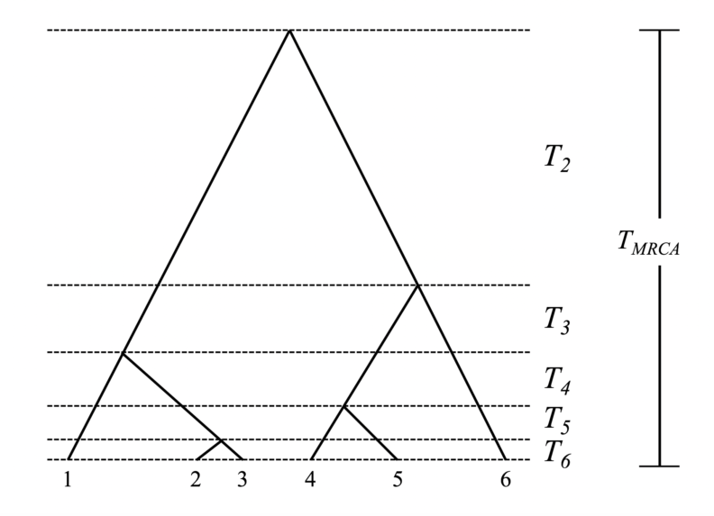
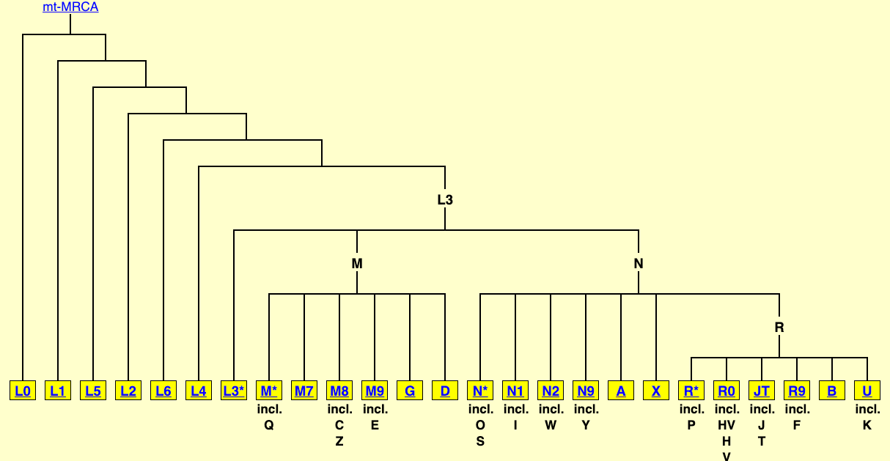
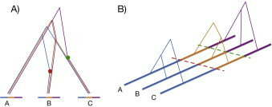

Coalescent theory is a beautiful thing that is rarely known outside popgen, so cool how it can so succinctly be plugged into sequence data serving as a base model for assorting genomes according to causality chains (common ancestor relationships).
If there was no recombination, if sexual reproduction wasn't a thing, a single tree like this could explain all genetic relationships among contemporary humans.
Which interestingly is the case for the mitochondria. There's a single huge tree relating all of humanity in terms of mitochondrial variation (a tiny molecule of 16k base pairs), each branching in this tree is traced with mutations in specific positions.
For the recombining genome, one needs a different structure, one that discerns which pieces of the genome relate to which ancestors. The current best model for this is the ancestral recombination graph, conveniently expressed as a list of coalescent trees.
Now, the problem here is that plugging population sequence data into this structure isn't straight forward because now you must infer which genetic segments relate to which (unsampled) ancestors and do this backwards in time for each generation until finding the last ancestor.
I'm sure some cracked AI person will eventually brute force this for maximal accuracy, but who knows. Having an accurate-ish form of this for all humans alive would be revolutionary, a literal recapitulation of the evolution of humanity. Then maybe relate to geography and time and have a cool visualization of human occupation of earth. That would be cool.